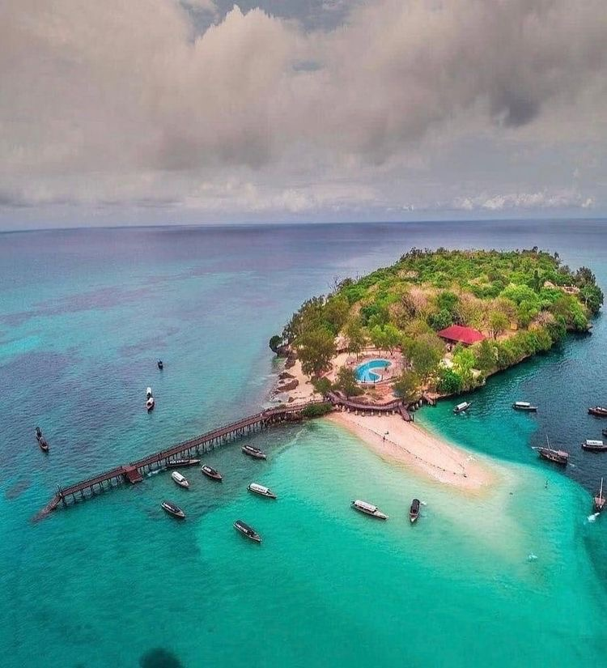

Zanzibar est un charmant archipel paradisiaque de l’Océan Indien situé en face des cotes tanzaniennes qui porte l’ambiance de l’ile et fait facilement tomber ses visiteurs amoureux. Il est formé de trois iles principales : Unguja, Pemba et Mafia et de plusieurs autres petites iles. Les deux premières iles forment depuis plusieurs siècles une entité tour à tour indépendante, colonisée par le Royaume-Uni ou incorporée à la Tanzanie tandis que l’ile Mafia a toujours été intégrée à la Tanzanie continentale. Avec le bombardement de Zanzibar en 1896, l’archipel fut le théâtre d’une des guerres les plus courtes de toute l’histoire qui dura trente-huit minutes et opposa les soldats britanniques aux soldats de l’ile d’Unguja. Zanzibar offre la possibilité de faire plusieurs activités :

Excursion à l’atoll de Mnemba: L’atoll de Mnemba est une zone protégée, peut-être la plus importante de Zanzibar et certainement la plus connue. La zone protégée de Mnemba est formée par un récif corallien de 7 kilomètres de long et 4 kilomètres de large, ce qui vous permet de faire l’une des meilleures plongées en apnée de l’île. De plus, c’est une zone fréquentée par les dauphins, c’est donc une autre raison de visiter la région. Cette zone fait partie des sites les plus visitées de Zanzibar non seulement à cause de ses eaux cristallines, ses centaines de couleurs bleues et sa vie marine mais aussi car on peut marcher sur cette étendue de sable et de voir les eaux claires (parfois avec une visibilité de plusieurs centaines de mètres) de cette zone de l’île.
La visite de Stone Town qui est le quartier historique de la capitale de Zanzibar. Stone Town est un concentré d’histoire, un mélange d’influences : britannique, indienne, portugaise, omanaise et swahili. Le cœur de Zanzibar est une ville à l’architecture inédite et magnifique, aux marchés colorés et odorants, aux ruelles étroites parsemées de surprises, à la population métissée et accueillante.

Le restaurant The Rock: Situé en face de la plage de Michamvi Pingwe sur la cote sud-est de l’ile, il est parfois appelé le restaurant flottant. C’est une terrasse en plein air, offrant une soirée romantique sous les étoiles africaines la nuit, le ciel bleu le jour, avec des paysages marins panoramiques. Le restaurant est une expérience culinaire avec la nature et des plats préparés avec passion. Il est accessible depuis la plage à pied à marée basse ou en bateau à marée haute
Beit-al-Ajaib, House of Wonders: Ce bâtiment emblématique de Zanzibar est le plus haut de Stone Town. Construit sur les ruines du palais de la reine afro-perse Fatuma en 1883, ce fut le premier édifice de l’île à avoir l’éclairage et l’ascenseur électrique, d’où son surnom de « Maison des Merveilles ». Beit-al-Ajaib fut en son temps la plus grande demeure d’Afrique de l’Est où résida le sultan de l'époque. Les portes sculptées gravées de plusieurs versets du Coran et les sols en marbres donnent un air très majestueux à l’ensemble. A l’intérieur, vous pouvez admirer des objets et des vieilles photos retraçant la vie à Zanzibar au fil des siècles. La pièce maîtresse de ce musée est certainement le dhow, un voilier arabe traditionnel, placé au centre du bâtiment.

Le marché aux esclaves et l'église anglicane de Zanzibar: Un lieu de mémoire chargé d'histoire. On y découvre les conditions effrayantes réservées aux esclaves avant leurs ventes. Ceux-ci attendaient que leur sort soit joué, cloîtrés dans quelques mètres sans air ni lumière. Entassés les uns aux autres dans si peu d’espace et dans des conditions déplorables, il fallait attendre la marée pour que les excréments aux sols puissent être lavés. Il n'était pas rare que beaucoup de ces êtres humains meurent de suffocation ou d’épuisement. A l’extérieur du marché aux esclaves, un mémorial fut créé par l’artiste Clara Sörnäs. On y voit des statues entourées de vrais fers ayant enchaîné les esclaves. L’église, quant à elle, à la particularité d’être architecturalement influencée par l’art gothique et arabe.
Prison Island: Bien que son vrai nom soit Changuu, la réalité est que tout le monde (ou du moins les touristes) la connaît sous le nom de Prison Island. C’est parce qu’il a été utilisé comme une prison pour les esclaves rebelles. Cela dure depuis 1890. Cette île était une colonie britannique depuis 1896, l’année où la guerre la plus courte de l’histoire a eu lieu. En 1893, cette île a été acquise par le vizir britannique de l’époque à Zanzibar, Sir Lloyd William Matthews. Il y construisit un bâtiment dont la fonction principale était d’être un centre pénitentiaire. Mais ses murs n’ont jamais eu de prisonniers. À partir de 1923, ses installations ont été utilisées pour mettre en quarantaine les personnes traitées contre la fièvre jaune et d’autres maladies contagieuses. Raison pour laquelle il est également connu comme l’île de la quarantaine. L’île est minuscule, elle mesure à peine 800 mètres de long sur environ 230 de large.
